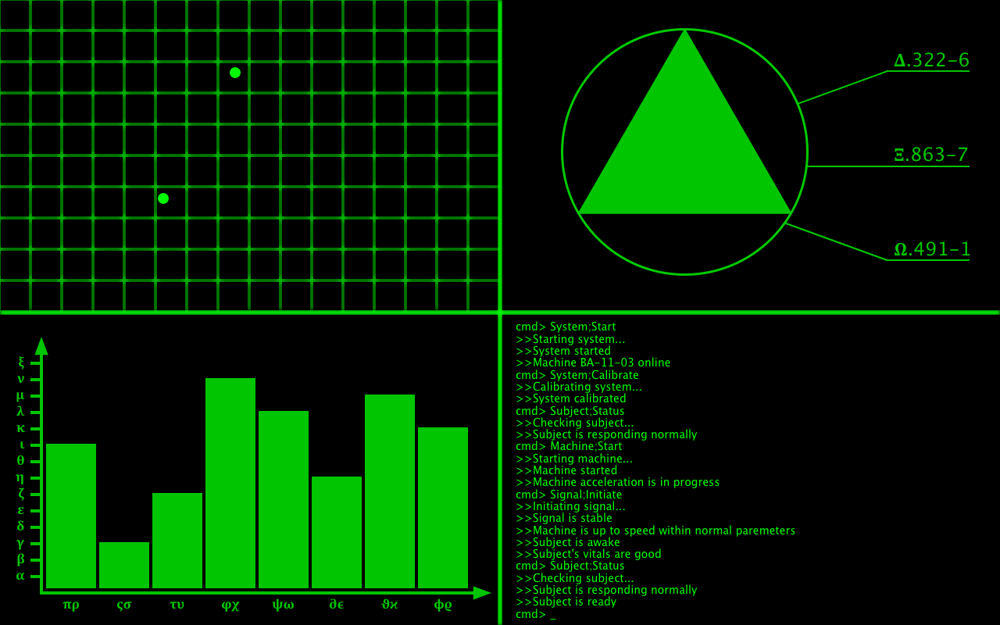
GIF made to be displayed on a screen at a sci-fi themed party (text based on "System;Start" by Area 11)
Goggles
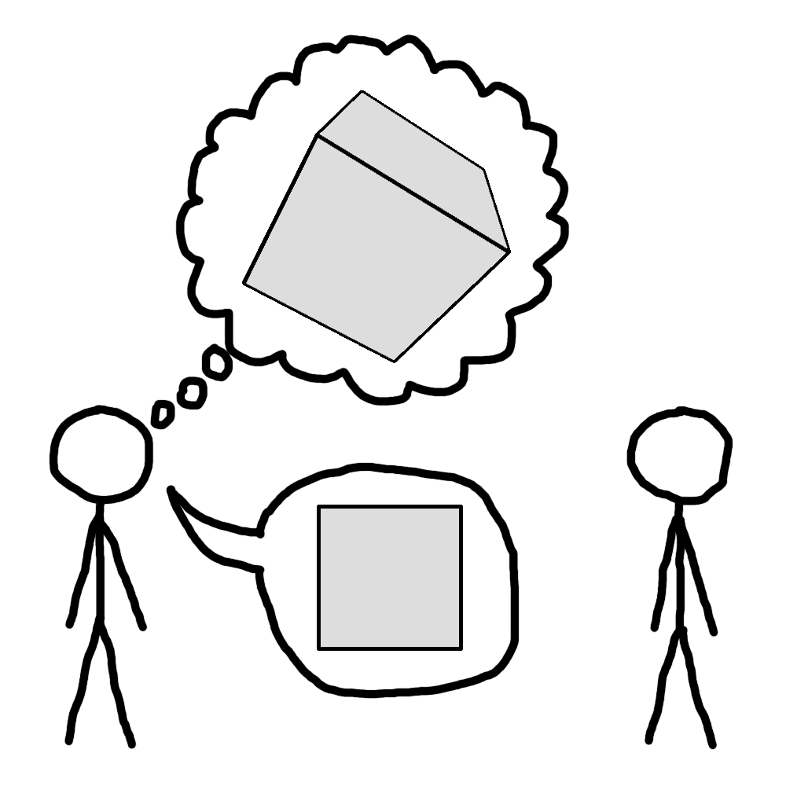
I have trouble putting my thoughts into words
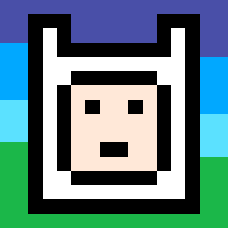
Finn (from Adventure Time)
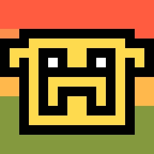
Jake (from Adventure Time)
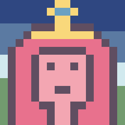
Bubblegum (from Adventure Time)
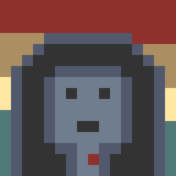
Marceline (from Adventure Time)
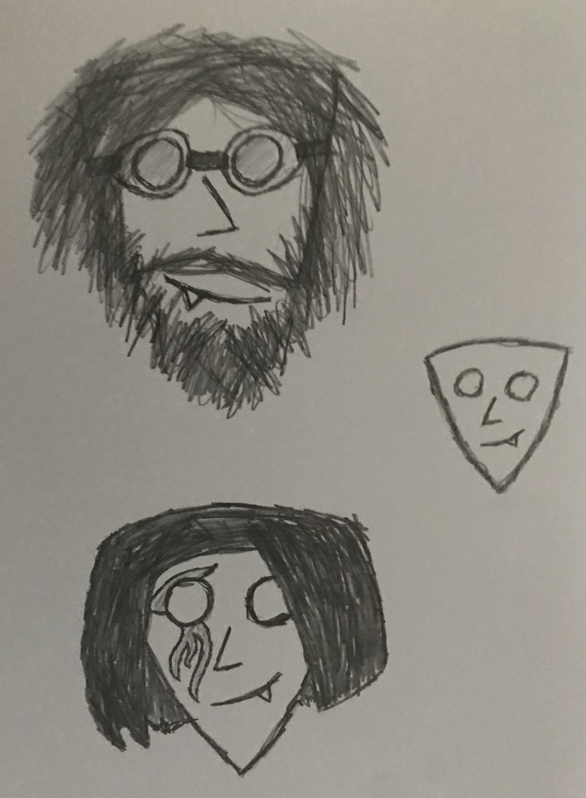
Faces
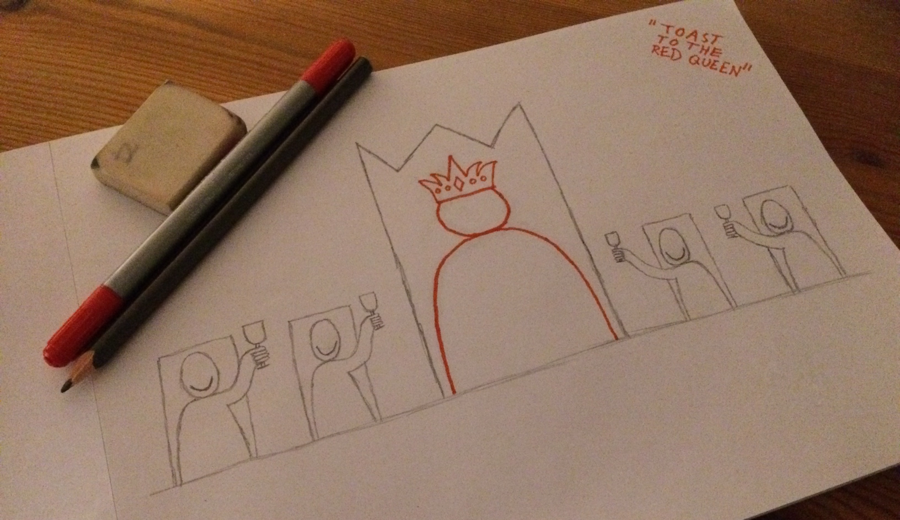
Toast (based on "Red Queen" by Area 11)
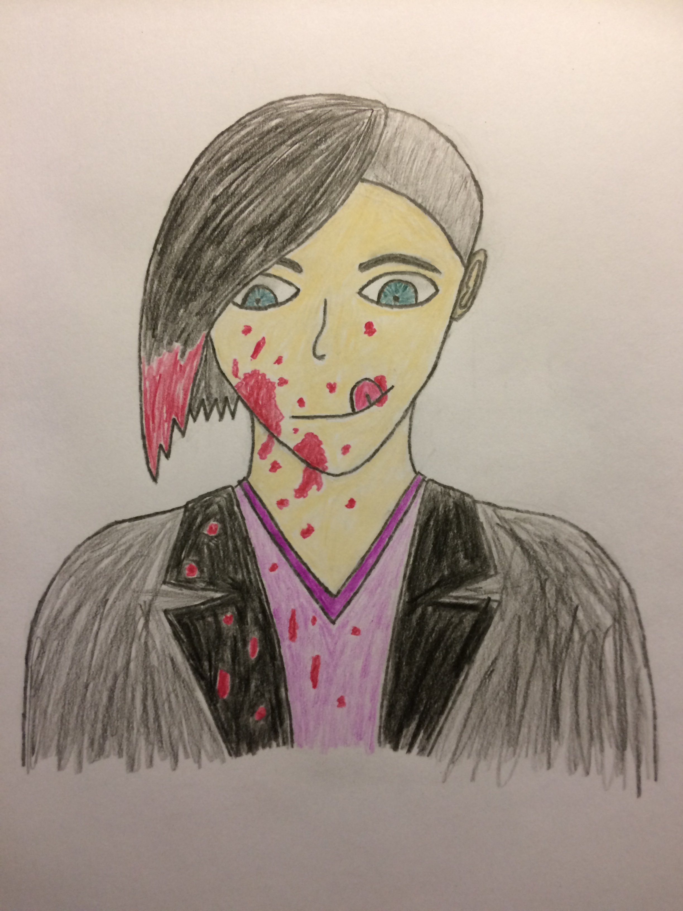
"Ketchup"
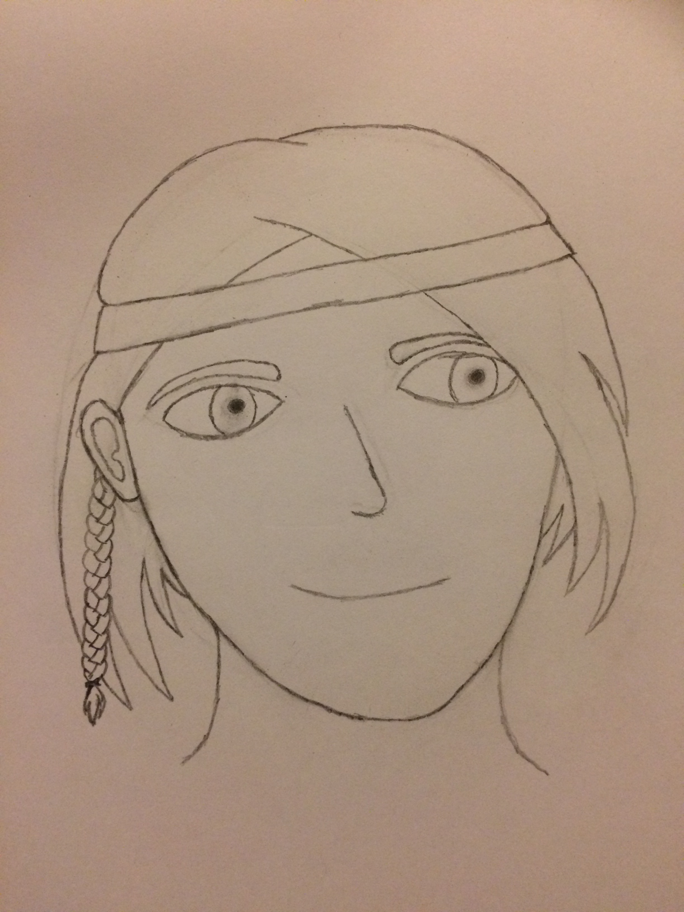
Genderbent Snorri (from Septimus Heap)
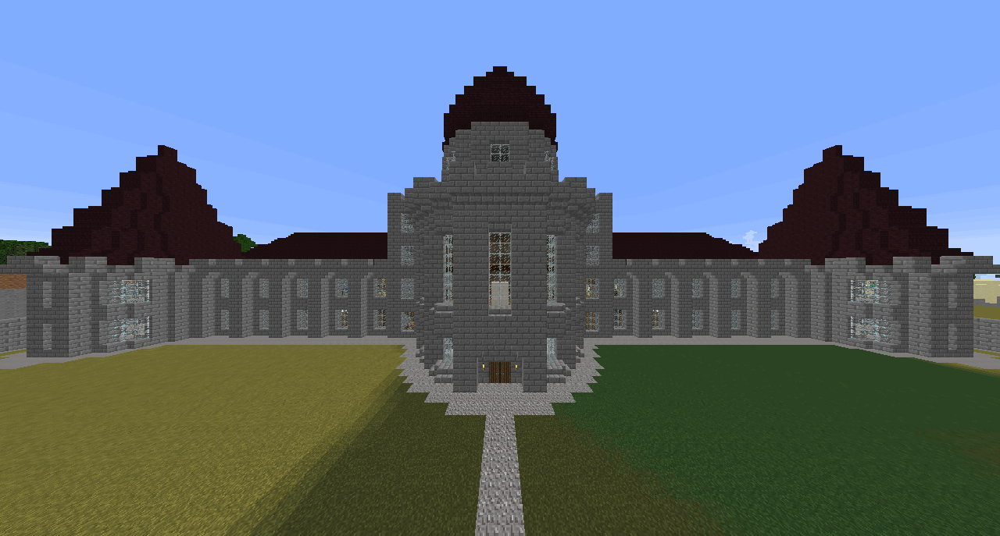
The Palace (from Septimus Heap)
Dragon Ring (for an unfinished Septimus Heap Minecraft mod)
Flyte Charm (for an unfinished Septimus Heap Minecraft mod)
Chocolate Charm (for an unfinished Septimus Heap Minecraft mod)
Unseen Charm (for an unfinished Septimus Heap Minecraft mod)
Fireball Charm (for an unfinished Septimus Heap Minecraft mod)
Snowball Charm (for an unfinished Septimus Heap Minecraft mod)
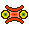
Eye Monster
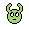
Horn Monster
Fluffy Monster
Game Boy
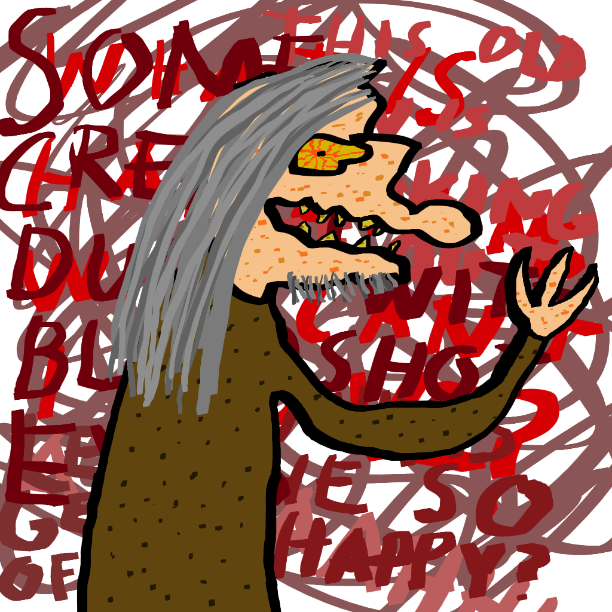
Why is he so happy?